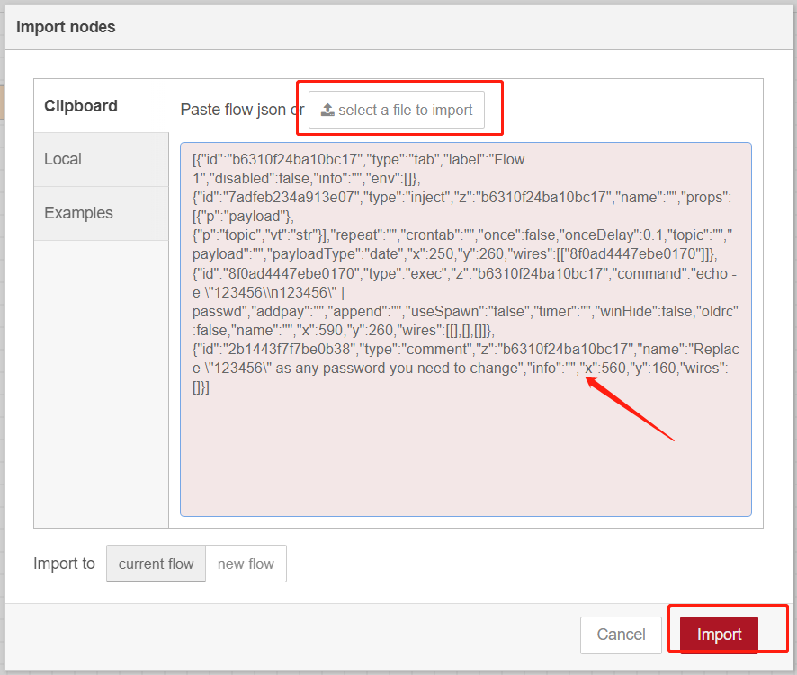
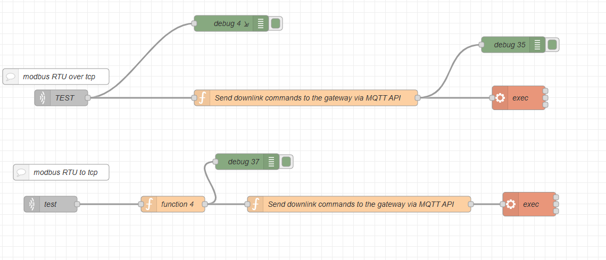
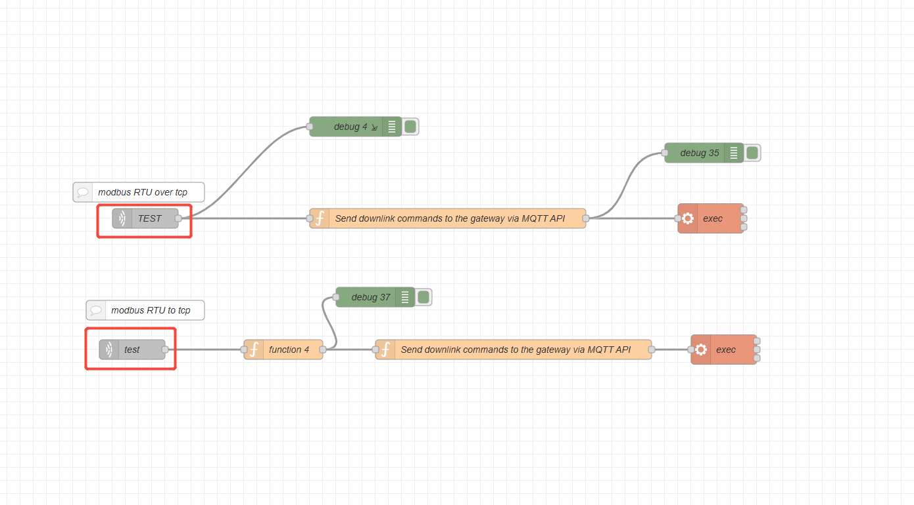
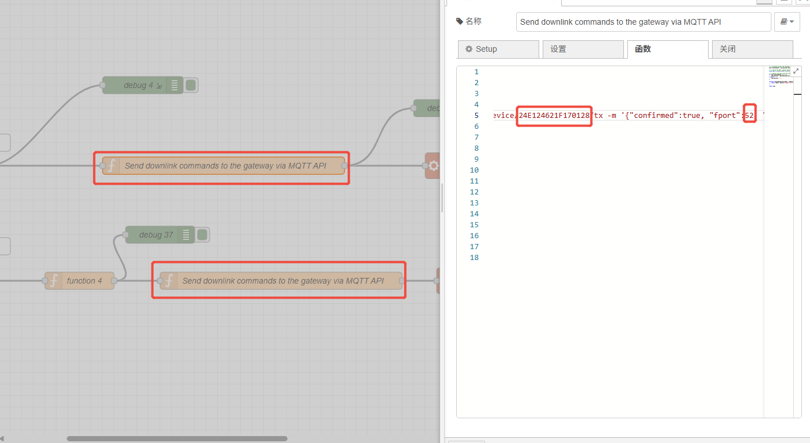
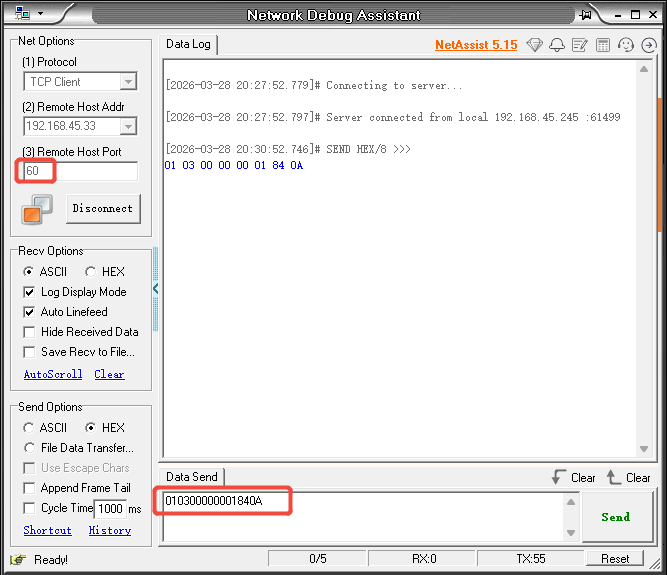
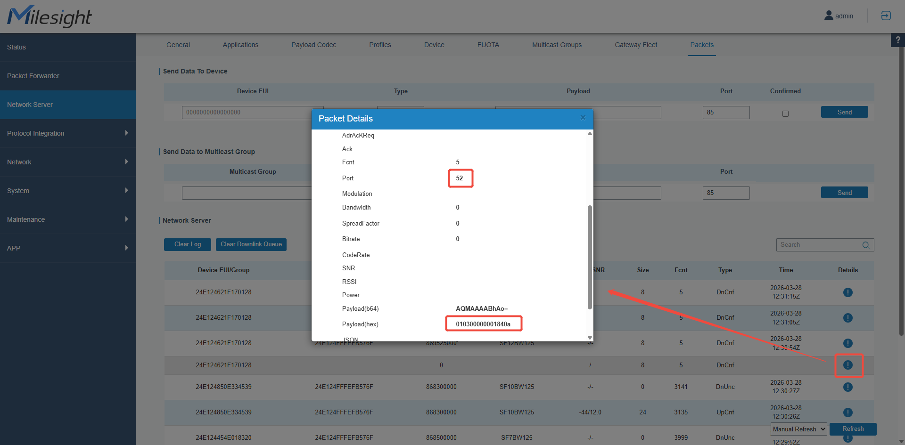
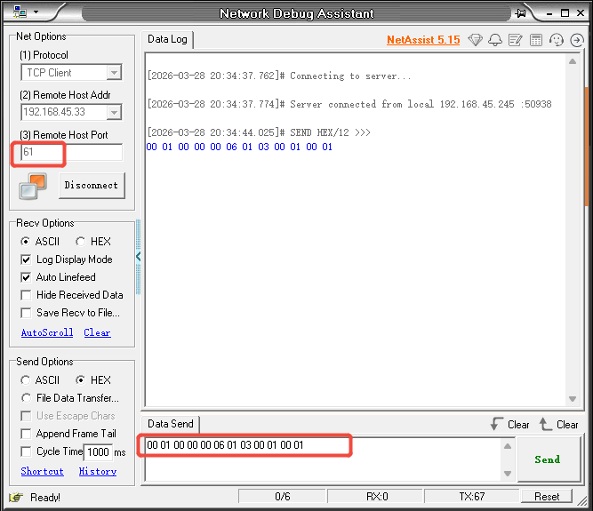
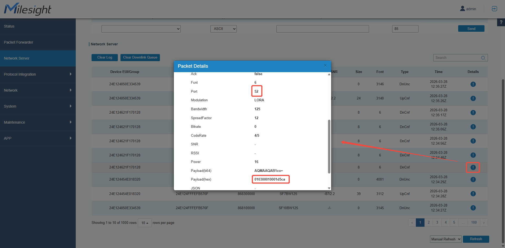

How to implement Modbus RTU to and over TCP on a Milesight gateway via Node-Red
How to implement Modbus RTU to/over TCP on a Milesight gateway via Node-Red

| Version | Update Time | Description | Author |
| 1.0 | March 28, 2026 | Initial version | Charles |
Description
For third-party LoRaWAN sensors, if the sensor can interact with Modbus devices and has a corresponding port that supports transparent transmission of Modbus RTU commands, then you can implement Modbus RTU over/to TCP on the Milesight gateway via Node-Red.
Requirement
Milesight Gateway: UG56/UG65/UG67
LoRaWAN sensors supporting Modbus passthrough functionality
Configuration
Step 1: Launch Node-RED and Import Flow Example
Go to App > Node-RED page to enable Node-RED program and wait for a while to load the program, click Launch button to start Node-RED web GUI.

Log in the Node-RED web GUI. The account information is the same as gateway web GUI.

Click Import to import the node-red flow example by pasting the content or import the json format file.


Step 2: Node-RED Configuration
Flow structure:
贴上node-red截图

Content:
| [{"id":"1d960e9e2a99b2b4","type":"tab","label":"流程 1","disabled":false,"info":"","env":[]},{"id":"c3308c643a9b6029","type":"tcp in","z":"1d960e9e2a99b2b4","name":"TEST","server":"server","host":"","port":"60","datamode":"stream","datatype":"buffer","newline":"","topic":"TEST","trim":false,"base64":false,"tls":"","x":310,"y":360,"wires":[["198e2dcef8347ace","f737028e6d5aea95"]]},{"id":"198e2dcef8347ace","type":"debug","z":"1d960e9e2a99b2b4","name":"debug 4","active":true,"tosidebar":true,"console":true,"tostatus":false,"complete":"true","targetType":"full","statusVal":"","statusType":"auto","x":630,"y":220,"wires":[]},{"id":"f737028e6d5aea95","type":"function","z":"1d960e9e2a99b2b4","name":"Send downlink commands to the gateway via MQTT API","func":"// 1. Directly convert the incoming Buffer to Base64/nmsg.finalCommand2 = msg.payload.toString('base64');/n/n// 2. Define the MQTT command template/nconst cmd = `mosquitto_pub -h 127.0.0.1 -p 1883 -u loraadm -P URloraadm123456 -t application/1/device/24E124621F170128/tx -m '{/"confirmed/":true, /"fport/":52, /"data/":/"CQEA/w==/"}'`;/n/n// 3. Replace the data value and output the final command/nif (msg.finalCommand2 !== /"/") {/n msg.payload = replaceDataValue(cmd, msg.finalCommand2);/n} else {/n msg.payload = /"/";/n}/n/nfunction replaceDataValue(cmdStr, newData) {/n return cmdStr.replace(/(/"data/":/")([^/"]*)(/")/, '$1' + newData + '$3');/n}/n/nreturn msg;","outputs":1,"noerr":0,"initialize":"","finalize":"","libs":[],"x":770,"y":360,"wires":[["6324660ab04f3b4c","8c09f1dc361f3181"]]},{"id":"6324660ab04f3b4c","type":"exec","z":"1d960e9e2a99b2b4","command":"","addpay":"payload","append":"","useSpawn":"false","timer":"","winHide":false,"oldrc":false,"name":"exec","x":1170,"y":360,"wires":[[],[],[]]},{"id":"8c09f1dc361f3181","type":"debug","z":"1d960e9e2a99b2b4","name":"debug 35","active":true,"tosidebar":true,"console":false,"tostatus":false,"complete":"true","targetType":"full","statusVal":"","statusType":"auto","x":1160,"y":260,"wires":[]},{"id":"755ebccdd953cd8f","type":"comment","z":"1d960e9e2a99b2b4","name":"modbus RTU over tcp ","info":"","x":300,"y":320,"wires":[]},{"id":"667ddb0fd8d27f22","type":"comment","z":"1d960e9e2a99b2b4","name":"modbus RTU to tcp ","info":"","x":310,"y":500,"wires":[]},{"id":"2a12498928836e80","type":"tcp in","z":"1d960e9e2a99b2b4","name":"test","server":"server","host":"","port":"61","datamode":"stream","datatype":"buffer","newline":"","topic":"test","trim":false,"base64":false,"tls":"","x":290,"y":560,"wires":[["d6d0dc69c79aa244"]]},{"id":"d6d0dc69c79aa244","type":"function","z":"1d960e9e2a99b2b4","name":"function 4","func":"// CRC16 Modbus calculation/nfunction crc16(buffer) {/n let crc = 0xFFFF;/n for (let pos = 0; pos < buffer.length; pos++) {/n crc ^= buffer[pos];/n for (let i = 0; i < 8; i++) {/n if ((crc & 0x0001) !== 0) {/n crc >>= 1;/n crc ^= 0xA001;/n } else {/n crc >>= 1;/n }/n }/n }/n // Return the low byte first, followed by the high byte/n return Buffer.from([crc & 0xFF, (crc >> 8) & 0xFF]);/n}/n/n/n/n/**/n * Modbus Convert TCP commands to Modbus RTU commands/n * @param {Buffer} tcpBuffer - TCP packet/n * @returns {Buffer} RTU packet/n *//nfunction tcpToRtu(tcpBuffer) {/n if (!Buffer.isBuffer(tcpBuffer)) throw new Error(/"Input must be Buffer/");/n if (tcpBuffer.length < 8) throw new Error(/"TCP buffer too short/");/n/n // Extract the content following the MBAP header/n // The first 7 bytes of the MBAP：[Transaction ID 2][Protocol ID 2][Length 2][Unit Identifier1]/n // PDU: Function code + data/n const unitIdentifier = tcpBuffer[6]; // address/n const pdu = tcpBuffer.slice(7); // Function code + data/n/n // Assembling an RTU frame (address + function code + data)/n const rtuNoCrc = Buffer.concat([Buffer.from([unitIdentifier]), pdu]);/n/n // Calculate the CRC16 and concatenate/n const crc = crc16(rtuNoCrc);/n/n return Buffer.concat([rtuNoCrc, crc]);/n}/n/n// ====== Example ======/nconst tcpHex = msg.payload.toString('hex');/nconst tcpBuffer = Buffer.from(tcpHex, 'hex');/nconst rtuBuffer = tcpToRtu(tcpBuffer);/n/n// console.log('RTU command:', rtuBuffer.toString('hex')); // 010300000002c40b/n/nconst hexStr = tcpToRtu(tcpBuffer).toString('hex')/n/nmsg.result = hexStr/nreturn msg","outputs":1,"noerr":0,"initialize":"","finalize":"","libs":[],"x":520,"y":560,"wires":[["8d1e08e00fe171ca","85f72662122c1739"]]},{"id":"8d1e08e00fe171ca","type":"debug","z":"1d960e9e2a99b2b4","name":"debug 37","active":true,"tosidebar":true,"console":false,"tostatus":false,"complete":"true","targetType":"full","statusVal":"","statusType":"auto","x":660,"y":480,"wires":[]},{"id":"85f72662122c1739","type":"function","z":"1d960e9e2a99b2b4","name":"Send downlink commands to the gateway via MQTT API","func":"/n/nmsg.finalCommand2 = hexToBase64(msg.result)/n/nconst cmd = `mosquitto_pub -h 127.0.0.1 -p 1883 -u loraadm -P URloraadm123456 -t application/1/device/24E124621F170128/tx -m '{/"confirmed/":true, /"fport/":52, /"data/":/"CQEA/w==/"}'`;/n/nif (msg.finalCommand2 != /"/") {/n msg.payload = replaceDataValue(cmd, msg.finalCommand2);/n}/nelse {/n msg.payload = /"/";/n}/n/n/n/n/nfunction hexToBase64(hexStr) {/n if (hexStr == /"/")/n {/n return 1;/n }/n else{/n let bytes = [];/n for (let i = 0; i < hexStr.length; i += 2) {/n bytes.push(parseInt(hexStr.substr(i, 2), 16));/n }/n/n let binary = String.fromCharCode(...bytes);/n/n return btoa(binary);}/n}/n/nfunction btoa(str) {/n return Buffer.from(str, 'binary').toString('base64');/n}/n/nfunction replaceDataValue(cmdStr, newData) {/n/n return cmdStr.replace(/(/"data/":/")([^/"]*)(/")/, `//$1${newData}//$3`);/n}/n/nreturn msg","outputs":1,"noerr":0,"initialize":"","finalize":"","libs":[],"x":870,"y":560,"wires":[["29ccd6958f7130ee"]]},{"id":"29ccd6958f7130ee","type":"exec","z":"1d960e9e2a99b2b4","command":"","addpay":"payload","append":"","useSpawn":"false","timer":"","winHide":false,"oldrc":false,"name":"exec","x":1190,"y":560,"wires":[[],[],[]]}] |
Step 3: Please refer to this article(https://support.milesight-iot.com/a/solutions/articles/73000514280) for instructions on connecting your sensor that supports Modbus transparent transmission to the built-in Network Server (NS) of the Milesight gateway.
Step 4: You can double-click each of these two nodes to configure the ports for Modbus RTU over TCP and Modbus RTU to TCP separately, but please do not use the same port for both.

Step 5: Double-click the Function node, replace the device EUI in the Topic field with the device EUI of your LoRaWAN device, and set the fport to the Modbus passthrough port used by your LoRaWAN sensor.

Step 6: Deploy and Check Result

Step 7: Test
①Modbus RTU over TCP
I launched a TCP client tool on a computer that is on the same local network as the UG65 gateway. Since I set the Modbus RTU over TCP port to 60, I used the TCP client tool to connect to port 60 of the UG65 gateway. Using this tool, I was able to successfully send a Modbus RTU command to the Modbus passthrough port of the LoRaWAN sensor.


②Modbus RTU to TCP
I launched a TCP client tool on a computer that is on the same local network as the UG65 gateway. Since I set the Modbus RTU over TCP port to 61, I used the TCP client tool to connect to port 61 of the UG65 gateway. Using this tool, I successfully sent a Modbus TCP command, which was automatically converted into a Modbus RTU command and forwarded to the passthrough port of the LoRaWAN sensor.


-------END-----